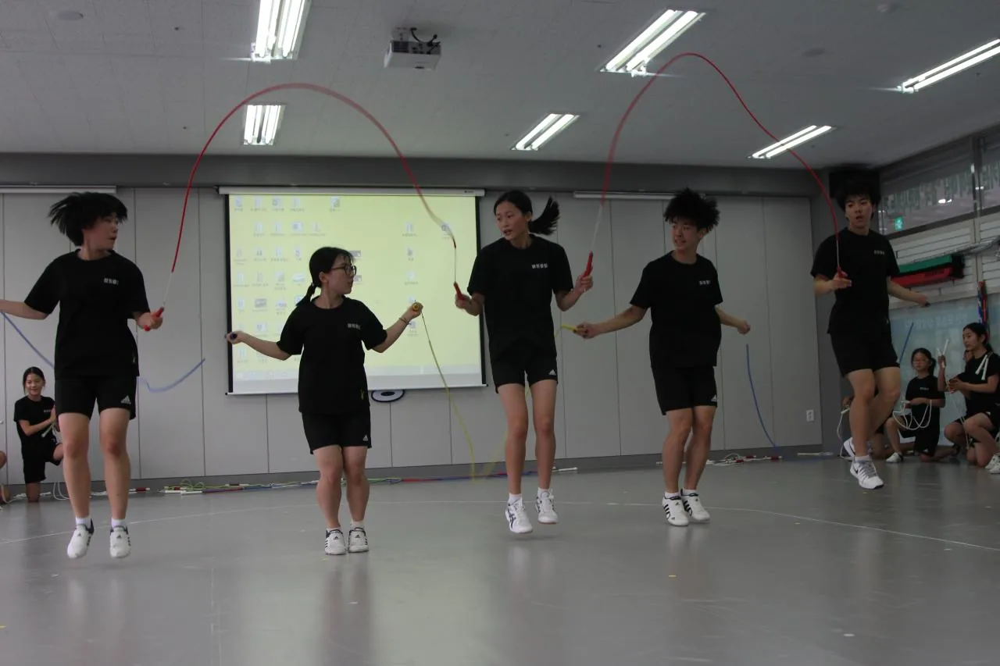
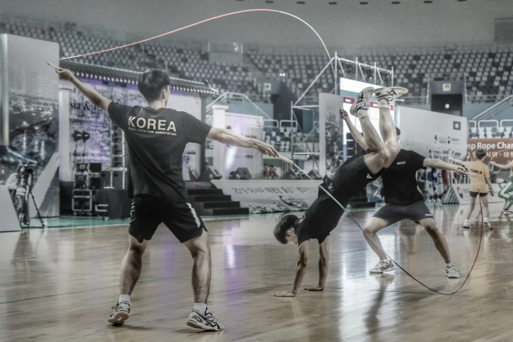
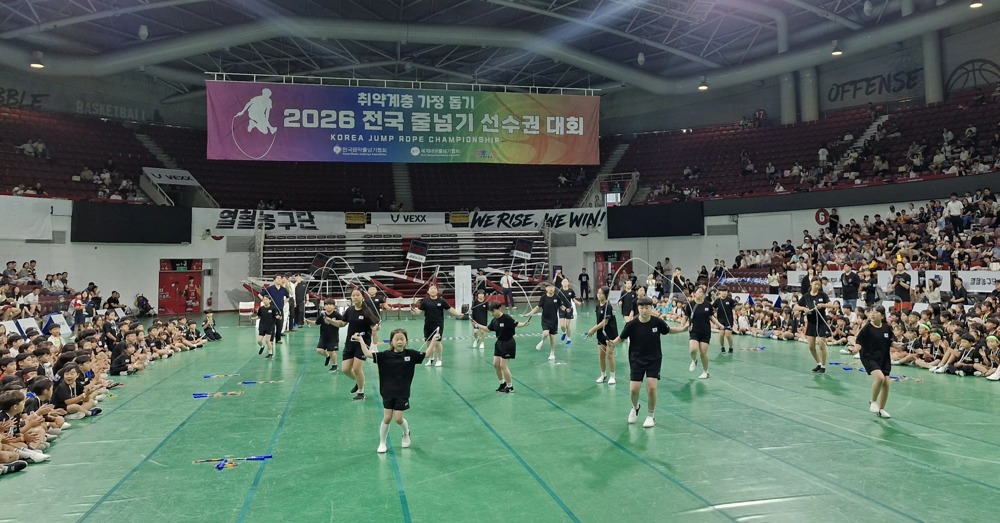
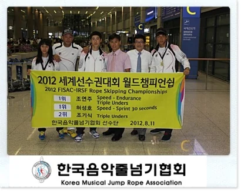
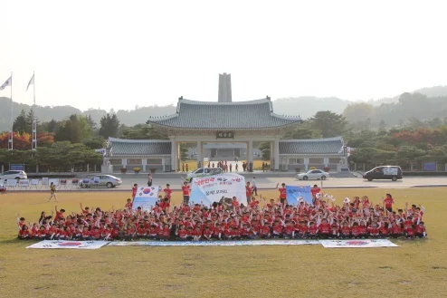
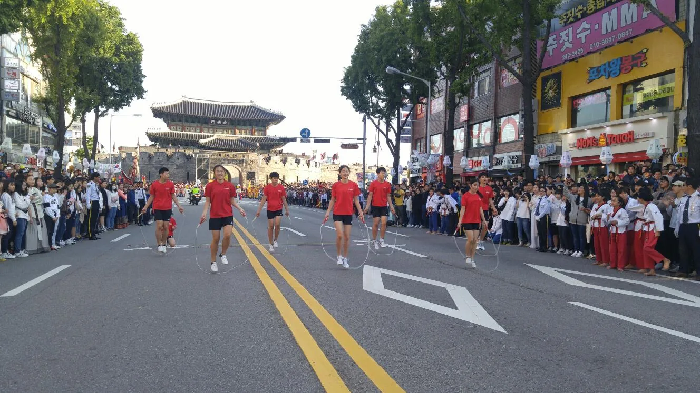

Jumping Club
음악줄넘기 전문 교육 브랜드
글로벌 교육브랜드 대상(2개 부문) · 창업원장상 · 산업통상자원위원장 표창 · 창업진흥원장 표창


줄넘기 급수 프로그램에서 경영까지
단계별 줄넘기 인증 급수 시스템으로 자동 성장합니다!
점핑클럽은 아이들이 즐겁게 배우고, 지도자가 자신 있게 가르칠 수 있도록 음악줄넘기 교육 프로그램과 영상 자료를 개발·보급합니다.
다양한 보조운동과 단계별 급수 기술 교육으로 아이들이 자기 수준에 맞게 도전하고 성취감을 느끼도록 돕습니다. 지도자는 따라 하기 쉬운 영상을 활용해 수업을 준비하고, 어려운 기술도 작은 동작으로 나누어 가르칠 수 있습니다.
또한 현장에서 바로 활용할 수 있는 경영 노하우와 학부모의 신뢰를 쌓는 상담법을 연구하고 나누며, 지도자와 교육관이 함께 성장하도록 지원합니다.
어린이부터 성인까지, 목표에 맞는 맞춤형 프로그램
어린이 줄넘기 | 성인 다이어트 | 체대 진로·입시


점핑클럽 주간 교육 예시입니다(주 3일). 횟수별, 주 3회, 주 5일 등 방과후, 교육관 등 수업 운영 상황에 맞춰 자율적으로 구성할 수 있습니다.
01월·화
02수·목
03금
LEVEL
5단계, 35급수, 약 7년~ 과정. 아이들은 목표에 스스로 도전하고, 학부모는 성장에 만족하고, 지도자는 초보부터 고급까지 체계적으로 지도할 수 있어, 실력이 쌓일수록 더 오래 배우고 싶은 교육을 만듭니다. (줄넘기 인증급수제 최초 고안자: 남중진)
01BASIC
02ELITE
03SUPER
04MASTER
05HEAD MASTER
전체 과정 기간은 자료마다 "6년 이상"(급수표)과 "7년 이상"(CEO 자료)으로 다릅니다. 과정 기간 표기 통일
5단계 급수
5단계 급수
주니어마스터란?
주니어마스터증은 성인이 되면 사단법인 한국음악줄넘기협회 지도자 자격증으로 인정됩니다.
체육대학 가산, 방과후 학교 강사 활동, 교원 직무연수 강사, 연수원 등 체육회 강사가 될 수 있고, 점핑클럽 전문관 설립 자격이 주어집니다.
이전 단계 자격을 취득해야 다음 단계에 응시할 수 있습니다.
자격
응시 자격
이수 클래스
주니어마스터 3급
Basic Class 1급 이수
BASIC
주니어마스터 2급
주니어마스터 3급 취득 후 Elite Class 1급 이수
ELITE
주니어마스터 1급
주니어마스터 2급 취득 후 Super Class 1급 이수
SUPER
마스터 클래스
주니어마스터 1급 취득 후 Master Class 1급 이수
MASTER
헤드마스터
Master 취득 후 Head Master 1급 이수
HEAD MASTER
대한민국 줄넘기 시범 및 대표선수




회원 WTRA · 우수회원 WTRA+ · 최우수회원 CEO